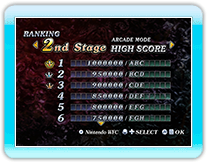
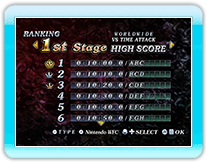

15 |
RANKING MODE |
 |
|
Im RANKING MODE kannst du dir deine erreichten Punkte ansehen.
● Gesamtresultat für STORY MODE Fertigstellung ● Gesamtresultat für jedes Level im ARCADE MODE ● Gesamtresultat für jedes Level im VERSUS MODE
(Drücke
● Der von dem Spieler erzielte Highscore für jeden Level im ARCADE MODE und die Punktzahl von 30 weiteren Spielern.
● Der von dem Spieler erzielte Highscore für jeden Level im VERSUS MODE und die Punktzahl von 30 weiteren Spielern. Während die VERSUS Mode Rangliste angezeigt wird, kannst du zwischen WORLD WIDE, REGIONAL und FRIEND wechseln, indem du * Du kannst dich im VERSUS MODE nur mit der Nintendo Wi-Fi Connection Rangliste registrieren, wenn du einen Highscore erzielst. * Die Registrierung zur Nintendo Wi-Fi Connection Rangliste erfolgt freiwillig. 
● Hudson WiiWare Portal Website ● Richtlinien zu den Betriebsbedingungen |
 |
 |
 |